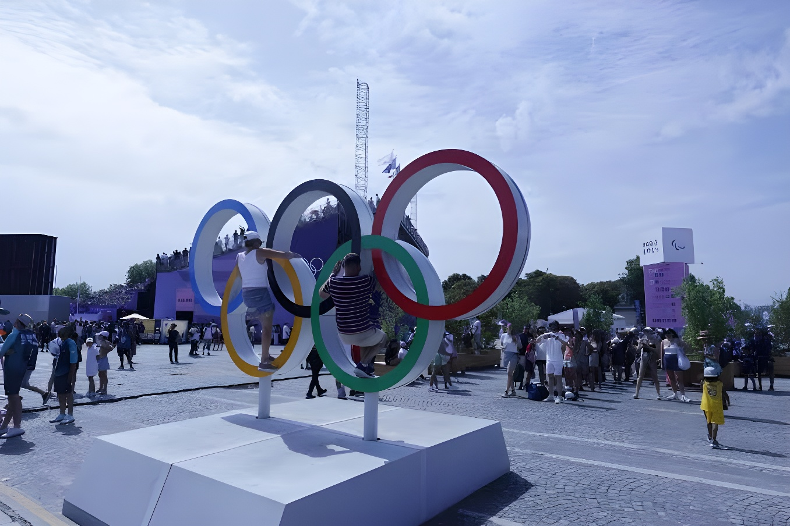

Le maire-président Kai Wegner (CDU) a annoncé jeudi 24 septembre 2026 le retrait de la candidature de Berlin à l'organisation des Jeux olympiques et paralympiques de 2036, 2040 ou 2044. Fragilisée par une évaluation technique défavorable et surtout par le basculement politique issu des élections régionales du 20 septembre, la capitale allemande laisse Munich et la région Cologne-Rhin-Ruhr seules en lice avant le vote décisif du Comité olympique allemand (DOSB), samedi 26 septembre à Baden-Baden.
Depuis 2025, le Comité olympique allemand (DOSB) pilotait un processus de sélection interne réunissant quatre projets pour les Jeux d'été de 2036, 2040 ou 2044 : Hambourg, Munich, la région Cologne-Rhin-Ruhr et Berlin, cette dernière portant un concept baptisé « Berlin+ », associé aux Länder de Brandebourg, de Saxe et de Mecklembourg-Poméranie occidentale. À la différence de Munich et de la région Cologne-Rhin-Ruhr, qui avaient organisé des référendums locaux, Berlin n'a jamais soumis son projet au vote populaire, invoquant des obstacles constitutionnels : seule la Chambre des députés (Abgeordnetenhaus) avait approuvé le concept, le 21 mai 2026, par les voix de la CDU, du SPD, de l'AfD et d'un député Die Linke, les Verts et le reste de Die Linke votant contre.
Munich avait obtenu un soutien massif lors de son référendum d'octobre 2025 (66,4 % de oui), tout comme la région Cologne-Rhin-Ruhr en avril 2026 (environ 66 % de oui, pour près de 1,4 million de suffrages exprimés). Hambourg, en revanche, avait rejeté le projet le 31 mai 2026 par référendum (55,1 % de non), pour la seconde fois en une décennie après son refus des Jeux de 2024 en 2015, ce qui avait déjà ramené la sélection nationale à trois candidats.
La Chambre des députés de Berlin approuve le concept « Berlin+ », sans consultation référendaire de la population.
Hambourg rejette sa candidature par référendum (55,1 % de non) : la sélection nationale se resserre à Berlin, Munich et Cologne-Rhin-Ruhr.
Élections régionales à Berlin : Die Linke, menée par Elif Eralp, devient la première force politique (25,7 %) ; la majorité CDU-SPD sortante est battue.
La commission d'évaluation du DOSB attribue à Berlin une note nettement inférieure (74,64/100) à celles de Munich (87,03) et de Cologne-Rhin-Ruhr (85,02).
Kai Wegner annonce officiellement le retrait de la candidature berlinoise lors d'une conférence de presse.
Lors de sa conférence de presse, Kai Wegner a directement mis en cause Elif Eralp, tête de liste victorieuse de Die Linke et prétendante à la mairie-présidence de Berlin, farouchement opposée au projet olympique. Selon le maire, dès qu'elle eut publiquement jugé la candidature berlinoise « réglée », des représentants des fédérations sportives de haut niveau lui auraient clairement signifié qu'ils ne pouvaient plus garantir leur soutien à la ville. Wegner a estimé qu'une « chance immense » venait d'échapper à la capitale.
La ministre-sénatrice des Sports Iris Spranger (SPD) a évoqué l'une des matinées les plus difficiles de son mandat, tandis que le commissaire au projet olympique Kaweh Niroomand a critiqué les propos d'Eralp, jugés dépourvus de respect envers le travail engagé depuis plusieurs années par la ville.
| Indicateur | Donnée vérifiée |
|---|---|
| Note DOSB — Berlin | 74,64 / 100 |
| Note DOSB — Munich | 87,03 / 100 |
| Note DOSB — Cologne-Rhin-Ruhr | 85,02 / 100 |
| Référendum de Munich (oct. 2025) | 66,4 % de oui (305 349 voix) |
| Référendum Cologne-Rhin-Ruhr (avril 2026) | ≈ 66 % de oui (≈1,4 million de voix) |
| Référendum de Hambourg (31 mai 2026) | 55,1 % de non — retrait |
| Score de Die Linke à Berlin (20 sept. 2026) | 25,7 % — 1ère force politique |
Le choix du candidat allemand se jouera samedi 26 septembre 2026 à Baden-Baden, où 42 fédérations olympiques, les membres du présidium du DOSB et huit membres individuels participeront au vote. Le résultat sera annoncé dans l'après-midi et retransmis en direct par la chaîne publique ARD. Le Comité international olympique prévoit, pour sa part, d'attribuer l'organisation des Jeux de 2036 à l'été 2029 ; plusieurs pays, dont l'Inde et le Qatar, ont déjà manifesté leur intérêt pour de futures éditions.
Pour Berlin, ce retrait signifie qu'aucune candidature olympique ne pourra plus aboutir avant au moins 2048, et que le site de voile envisagé à Rostock-Warnemünde, qui faisait partie du concept « Berlin+ », sort également de la compétition.
« Malheureusement, la prise a été débranchée. »
— Kai Wegner, maire-président de Berlin (CDU), 24 septembre 2026Le retrait de Berlin illustre la fragilité d'un projet olympique privé du mandat populaire dont bénéficiaient ses concurrents. Là où Munich et Cologne-Rhin-Ruhr pouvaient s'appuyer sur des référendums remportés dans des marges confortables, Berlin ne disposait que d'un vote parlementaire, par nature réversible au fil des scrutins. L'évaluation technique du DOSB, déjà défavorable à la capitale avant même le choc électoral du 20 septembre, avait du reste anticipé cette fragilité. À une semaine du centenaire des Jeux de 1936, la compétition se joue désormais entre Munich, qui met en avant l'héritage de ses Jeux de 1972, et une région Cologne-Rhin-Ruhr portée par un modèle multi-sites : la décision de Baden-Baden déterminera laquelle représentera l'Allemagne dans la course internationale à l'accueil des Jeux de 2036, 2040 ou 2044.
Der Regierende Bürgermeister Kai Wegner (CDU) verkündete am Donnerstag, dem 24. September 2026, den Rückzug der Berliner Bewerbung um die Olympischen und Paralympischen Spiele 2036, 2040 oder 2044. Geschwächt durch eine ungünstige DOSB-Bewertung und vor allem durch den politischen Umbruch nach der Abgeordnetenhauswahl vom 20. September, überlässt die Hauptstadt München und der Region Köln-Rhein-Ruhr das Feld vor der entscheidenden Abstimmung des Deutschen Olympischen Sportbundes (DOSB) am Samstag, dem 26. September, in Baden-Baden.
Seit 2025 steuerte der Deutsche Olympische Sportbund (DOSB) ein internes Auswahlverfahren mit vier Projekten für die Sommerspiele 2036, 2040 oder 2044: Hamburg, München, die Region Köln-Rhein-Ruhr und Berlin, das unter dem Namen „Berlin+" gemeinsam mit den Ländern Brandenburg, Sachsen und Mecklenburg-Vorpommern antrat. Anders als München und die Region Köln-Rhein-Ruhr, die lokale Volksentscheide durchgeführt hatten, legte Berlin sein Konzept nie einer Volksabstimmung vor, mit Verweis auf verfassungsrechtliche Hindernisse: Allein das Abgeordnetenhaus hatte das Konzept am 21. Mai 2026 mit den Stimmen von CDU, SPD, AfD und einem Abgeordneten der Linken gebilligt, während Grüne und der Rest der Linksfraktion dagegen stimmten.
München hatte bei seinem Bürgerentscheid im Oktober 2025 breite Zustimmung erhalten (66,4 % Ja-Stimmen), ebenso die Region Köln-Rhein-Ruhr im April 2026 (rund 66 % Ja-Stimmen bei knapp 1,4 Millionen abgegebenen Stimmen). Hamburg hingegen hatte das Projekt am 31. Mai 2026 per Referendum abgelehnt (55,1 % Nein-Stimmen) — zum zweiten Mal innerhalb eines Jahrzehnts, nach der Ablehnung der Spiele 2024 im Jahr 2015 —, wodurch sich die nationale Auswahl bereits zuvor auf drei Bewerber verringert hatte.
Das Berliner Abgeordnetenhaus billigt das Konzept „Berlin+" — ohne Volksabstimmung.
Hamburg lehnt seine Bewerbung per Referendum ab (55,1 % Nein): Die nationale Auswahl verengt sich auf Berlin, München und Köln-Rhein-Ruhr.
Abgeordnetenhauswahl in Berlin: Die Linke unter Elif Eralp wird stärkste politische Kraft (25,7 %); die bisherige CDU-SPD-Mehrheit verliert.
Die DOSB-Bewertungskommission vergibt an Berlin eine deutlich niedrigere Note (74,64/100) als an München (87,03) und Köln-Rhein-Ruhr (85,02).
Kai Wegner verkündet auf einer Pressekonferenz offiziell den Rückzug der Berliner Bewerbung.
Auf seiner Pressekonferenz machte Kai Wegner unmittelbar Elif Eralp verantwortlich, die siegreiche Spitzenkandidatin der Linken und Anwärterin auf das Amt der Regierenden Bürgermeisterin, die sich entschieden gegen das Olympia-Projekt ausgesprochen hatte. Laut Wegner hätten Vertreter der Spitzensportverbände ihm klar signalisiert, dass sie der Stadt ihre Unterstützung nicht mehr garantieren könnten, nachdem Eralp die Berliner Bewerbung öffentlich für „erledigt" erklärt hatte. Der Hauptstadt sei damit eine „Riesenchance" genommen worden, so Wegner.
Sportsenatorin Iris Spranger (SPD) sprach von einem der schwierigsten Morgen ihrer Amtszeit, während Olympia-Beauftragter Kaweh Niroomand Eralps Äußerungen kritisierte und ihnen mangelnden Respekt vor der jahrelangen Arbeit der Stadt vorwarf.
| Kennzahl | Verifizierter Wert |
|---|---|
| DOSB-Note — Berlin | 74,64 / 100 |
| DOSB-Note — München | 87,03 / 100 |
| DOSB-Note — Köln-Rhein-Ruhr | 85,02 / 100 |
| Bürgerentscheid München (Okt. 2025) | 66,4 % Ja (305.349 Stimmen) |
| Bürgerentscheid Köln-Rhein-Ruhr (April 2026) | ≈ 66 % Ja (≈1,4 Mio. Stimmen) |
| Referendum Hamburg (31. Mai 2026) | 55,1 % Nein — Rückzug |
| Ergebnis Die Linke in Berlin (20. Sept. 2026) | 25,7 % — stärkste Kraft |
Die Entscheidung über den deutschen Bewerber fällt am Samstag, dem 26. September 2026, in Baden-Baden, wo 42 olympische Fachverbände, die Mitglieder des DOSB-Präsidiums sowie acht Einzelmitglieder abstimmen werden. Das Ergebnis wird am Nachmittag verkündet und live von der ARD übertragen. Das Internationale Olympische Komitee plant seinerseits, die Vergabe der Spiele 2036 im Sommer 2029 zu entscheiden; mehrere Länder, darunter Indien und Katar, haben bereits Interesse an künftigen Ausgaben bekundet.
Für Berlin bedeutet der Rückzug, dass mindestens bis 2048 keine Olympischen Spiele in der Hauptstadt stattfinden können, und dass auch der im Konzept „Berlin+" vorgesehene Segelstandort Rostock-Warnemünde aus dem Wettbewerb ausscheidet.
„Leider wurde der Stecker gezogen."
— Kai Wegner, Regierender Bürgermeister von Berlin (CDU), 24. September 2026Der Rückzug Berlins zeigt die Verwundbarkeit eines Olympia-Projekts, dem das demokratische Mandat fehlte, auf das sich seine Konkurrenten stützen konnten. Während München und Köln-Rhein-Ruhr auf komfortabel gewonnene Bürgerentscheide verweisen konnten, stützte sich Berlin allein auf einen Parlamentsbeschluss, der durch neue Mehrheiten jederzeit infrage gestellt werden konnte. Die technische Bewertung des DOSB, die bereits vor dem Wahlschock vom 20. September für Berlin ungünstig ausfiel, hatte diese Schwäche im Grunde vorweggenommen. Eine Woche vor dem hundertsten Jahrestag der Spiele von 1936 entscheidet sich der Wettbewerb nun zwischen München, das auf das Erbe seiner Spiele von 1972 setzt, und einer Region Köln-Rhein-Ruhr, die auf ein Mehrstandorte-Modell baut: Die Entscheidung von Baden-Baden wird bestimmen, wer Deutschland im internationalen Rennen um die Austragung der Spiele 2036, 2040 oder 2044 vertreten wird.